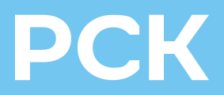

Полный логотип
С названием компании
Знак, цвет, голос и архитектура. Всё для работы с брендом в одном месте.
Полный логотип, компактный знак и альтернативная версия. Выберите цвет внутри каждой карточки.
С названием компании

Компактный фирменный знак
Наклонный знак из гайдбука
Сохраняйте пропорции. Масштабируйте знак целиком, не меняя ширину и высоту отдельно.
Используйте исходник. Не набирайте буквы логотипа шрифтом и не добавляйте тени или обводки.
Фирменный голубой из рабочего файла РСК и нейтральные цвета. Нажмите на код, чтобы скопировать.
RGB 114, 198, 239
RGB 246, 246, 246
RGB 255, 255, 255
Это цифровая палитра сайта. Значения CMYK и Pantone нужно сверять с печатным брендбуком.
Golos Text, гарнитура сайта РСК. Два начертания: Regular и Medium.
Аа Бб Вв Гг Дд Ее Ёё Жж Зз Ии Йй Кк Лл Мм Нн Оо Пп Рр Сс Тт Уу Фф Хх Цц Чч Шш Щщ Ъъ Ыы Ьь Ээ Юю Яя
Aa Bb Cc Dd Ee Ff Gg Hh Ii Jj Kk Ll Mm Nn Oo Pp Qq Rr Ss Tt Uu Vv Ww Xx Yy Zz
0123456789 !? @ № % & ()
Материалы шести жилых комплексов. Исходные изображения и дополнительные ракурсы доступны на Яндекс Диске.
Проектов не найдено. Попробуйте другое название или выберите все города.
Открыть всю папку рендеровГотовые комплекты и ссылки на исходные материалы.